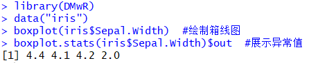
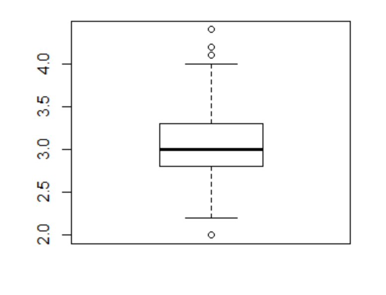
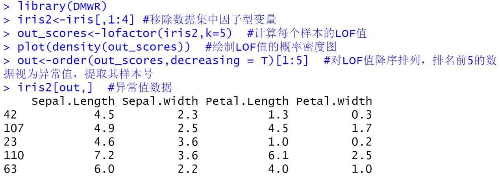
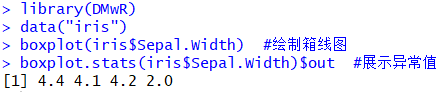
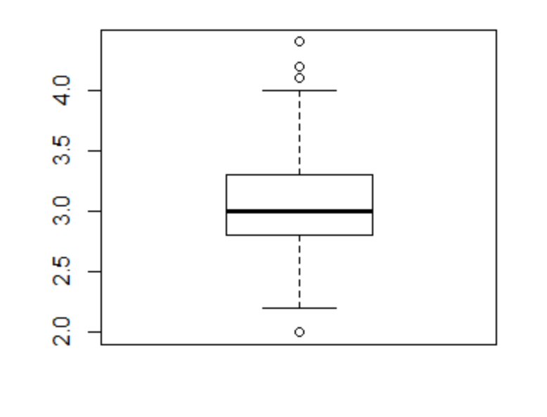
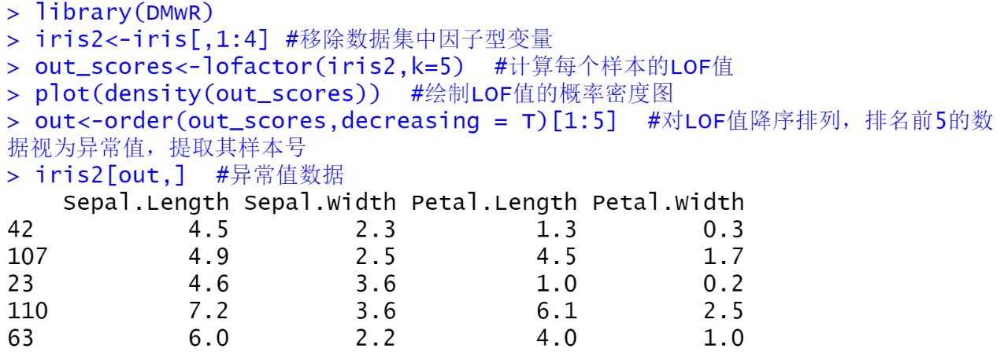

数据清洗
（1）数字异常值法
以DMwR程序包中iris（鸢尾花）数据集作为演示示例，该数据集包含150个案例（行）和5个变量，其中前四个为数值型变量，第五个为因子型变量，选择数据集中第二个变量sepal.width，绘制该变量的箱线图，观察其中的异常值。运行结果如下：

（2）局部异常因子法（LOF法）
以DMwR程序包中iris（鸢尾花）数据集作为演示示例，需要注意的是，该方法只能针对数值型变量，因此首先要移除数据集中非数值型变量的变量，然后用lofactor()函数计算每个样本的LOF值，在此基础上对所有LOF值进行降序排列，将排名前列的数据视为异常值，其具体操作见下述代码：


（3）聚类法
以DMwR程序包中iris（鸢尾花）数据集作为演示示例，因为R语言的k-means算法只接受数值型数据，因此，这里将因子型变量剔除掉，然后采用kmeans()函数进行聚类分析，在此基础上计算每个样本到其聚类中心的距离，再对距离进行降序排列，排名靠前的数据可视为异常值数据，其具体实现R语言代码如下：

以DMwR程序包中iris（鸢尾花）数据集作为演示示例，该数据集包含150个案例（行）和5个变量，其中前四个为数值型变量，第五个为因子型变量，选择数据集中第二个变量sepal.width，绘制该变量的箱线图，观察其中的异常值。运行结果如下：

（2）局部异常因子法（LOF法）
以DMwR程序包中iris（鸢尾花）数据集作为演示示例，需要注意的是，该方法只能针对数值型变量，因此首先要移除数据集中非数值型变量的变量，然后用lofactor()函数计算每个样本的LOF值，在此基础上对所有LOF值进行降序排列，将排名前列的数据视为异常值，其具体操作见下述代码：


（3）聚类法
以DMwR程序包中iris（鸢尾花）数据集作为演示示例，因为R语言的k-means算法只接受数值型数据，因此，这里将因子型变量剔除掉，然后采用kmeans()函数进行聚类分析，在此基础上计算每个样本到其聚类中心的距离，再对距离进行降序排列，排名靠前的数据可视为异常值数据，其具体实现R语言代码如下：